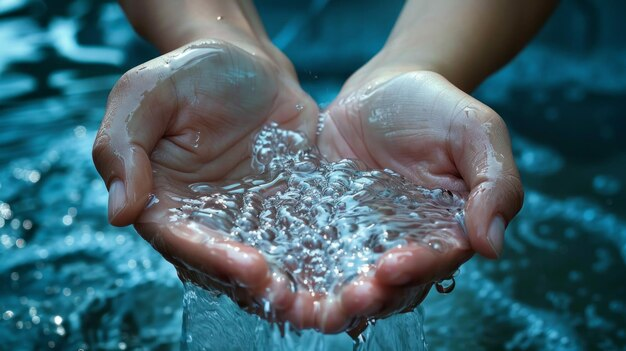

Sobre el proyecto
El viaje oculto del agua es un proyecto escolar que explica el camino del agua antes y después de utilizarla en casa.
Su propósito es informar de manera sencilla sobre la importancia de cuidar el agua y no contaminar el drenaje.